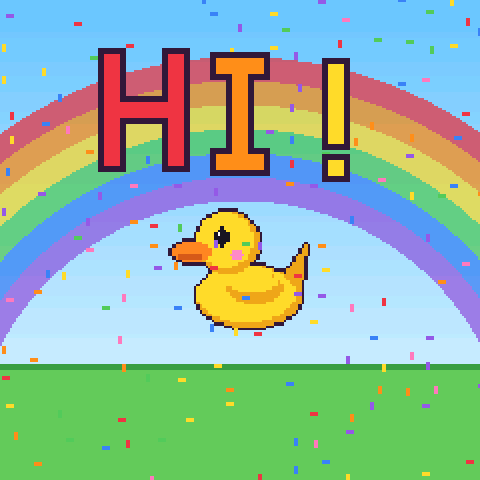
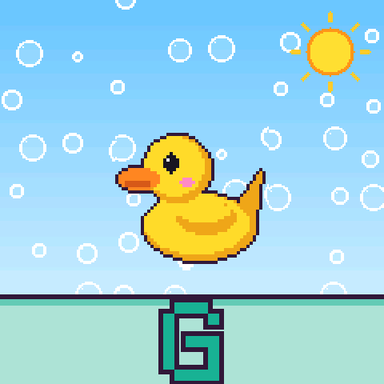
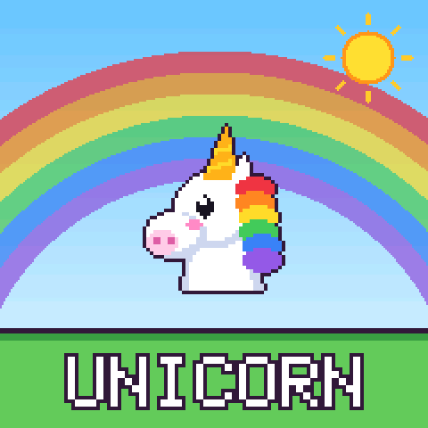
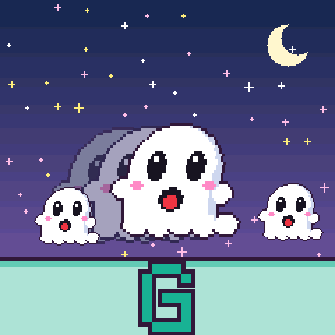
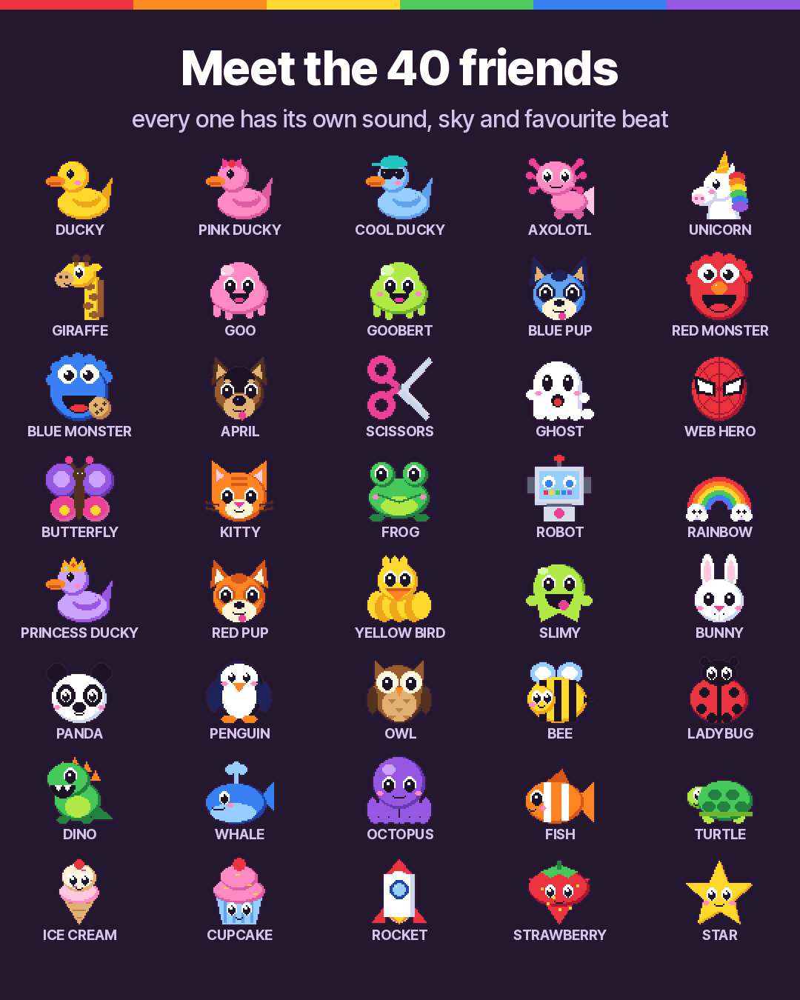

Rainbow mode
A music toy for little hands. Free firmware for the M-VAVE FM-1 synthesizer, made for a four-year-old.
No FM-1 needed to try it. Press the keys on the screen, or use your computer keyboard.
What it feels like
- Every key shows its note, big, in its own colour, like the coloured bells in a music class. C is red, D orange, E yellow, F green, G teal, A purple, B pink.
- 40 friends. Each has its own picture, sound, sky and favourite beat: ducks, an axolotl, a unicorn, a ghost, a rocket, a bunny and more.
- 10 beats with a bass line that always fits the keys. Dance, March, Spooky, Rock, Disco, Hip Hop, Train, Samba, Reggae, Lullaby.
- Every knob does something you can see and hear: big and small, day and night, echo, wiggle, and a choir of three friends.
- Six sound tricks on the top buttons, one tap on and one tap off: hiccup, backwards, sleepy, squeaky, giant and freeze.
- Six skies, a surprise friend on HOME, and a volume limit for small ears.
On the FM-1's screen

HelloA greeting every time it starts

A colour for every notePress a key, see its letter

40 friendsTurn PRESETS to meet them
10 beatsPress PLAY, and the friend dances
Sound tricksTap a top button: GIANT

Day to nightA knob changes the sky and the sound
Meet the friends

Try it
In your browser
The same firmware, running on your screen. Works on computers, phones and tablets.
Open the demo It needs sound on, and you may have to tap once to start.On an M-VAVE FM-1
Connect it by USB and press Install. It takes about a minute.
Open the installer Needs Chrome or Edge on a computer or an Android phone, and a USB cable. Safari and iPhones cannot do it.Is it safe? Can I go back?
You can return to the official firmware at any time: the installer page has a "Return to official V15" section. You download the official file from M-VAVE's website, and the installer backs up the FM-1 before it goes back. Installing firmware is at your own risk. This is an independent fan project and is not made or endorsed by M-VAVE.
How do I leave Rainbow mode?
It starts every time the FM-1 is switched on. Hold HOME and SAVE together for 3 seconds to get the full Felucca synthesizer, with your last session restored. Switch the FM-1 off and on to come back to Rainbow mode.